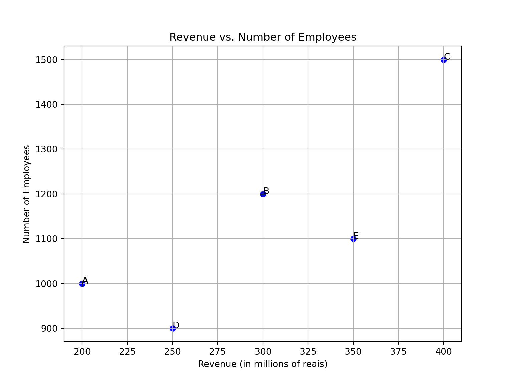
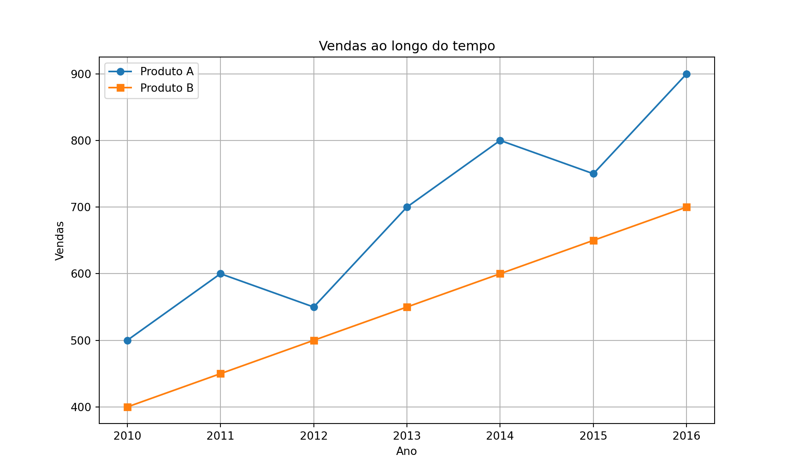
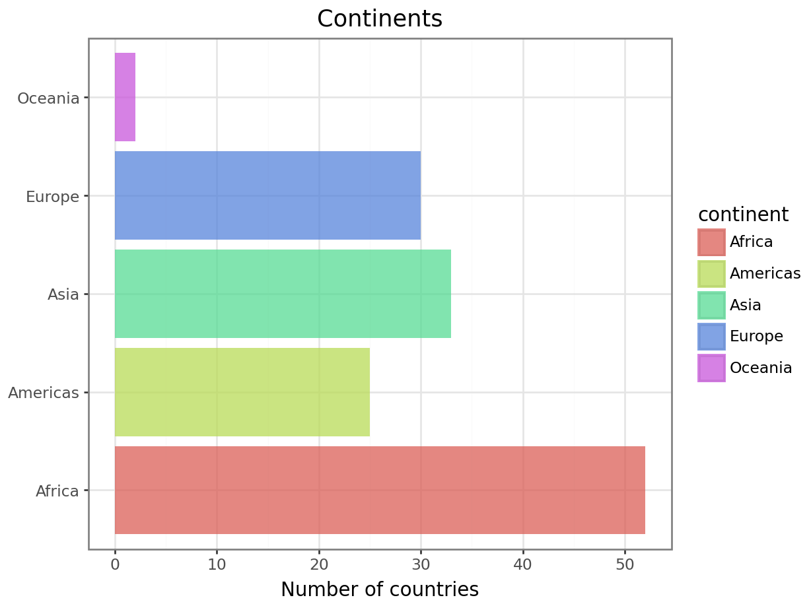
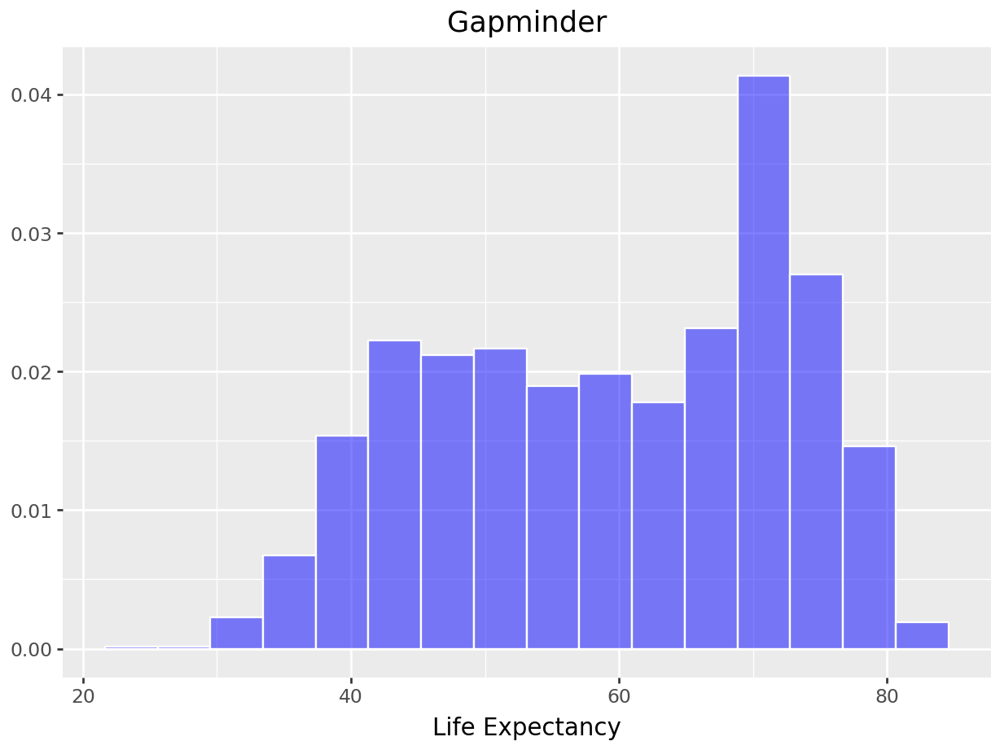
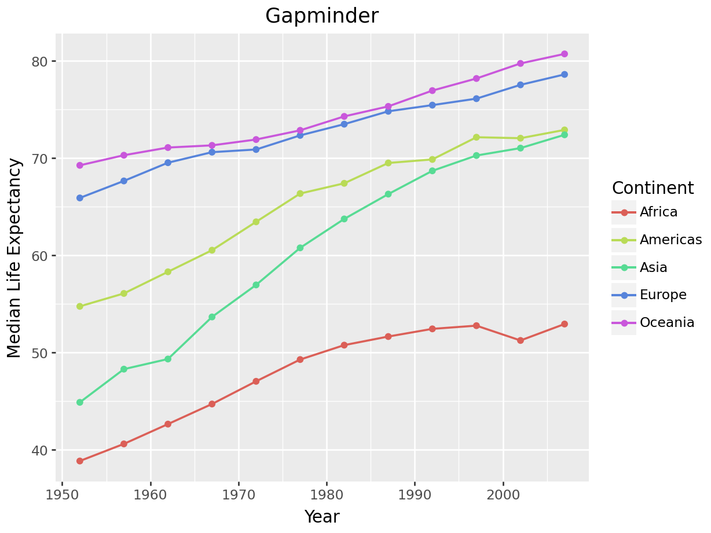

pip install library_name6 Data Processing and Visualization
6.1 Library Installation
Installing libraries in Python is essential to expand the language’s functionality. There are several ways to install libraries, but the most common is using a package manager. Pip is the default package manager for Python and usually comes with the Python installation.
To install a library with pip, open the terminal or command prompt and type the following command:
Replace library_name with the name of the library you want to install.
6.2 Numerical Data Processing
NumPy (Numerical Python) is an essential library for numerical computing in Python. It provides efficient data structures for working with multidimensional arrays and powerful mathematical functions for data manipulation.
To install NumPy, you can use pip, the default Python package manager:
pip install numpyThe main object in NumPy is the multidimensional array. You can create NumPy arrays using the numpy.array() function and perform basic mathematical operations with them:
import numpy as np
# Creating a NumPy array
arr = np.array([1, 2, 3, 4, 5])
# Basic mathematical operations
print("Sum:", np.sum(arr))Sum: 15print("Mean:", np.mean(arr))Mean: 3.0In addition to basic operations, NumPy provides universal functions (ufuncs) to apply operations to all elements of an array at once:
# Universal functions (ufuncs)
arr = np.array([1, 2, 3, 4, 5])
print("Square of each element:", np.square(arr))Square of each element: [ 1 4 9 16 25]print("Exponential of each element:", np.exp(arr))Exponential of each element: [ 2.71828183 7.3890561 20.08553692 54.59815003 148.4131591 ]Next, we present three practical examples of using NumPy functions.
Example 1: Descriptive Statistics Calculation
NumPy can be used to calculate descriptive statistics, such as mean, median, standard deviation, minimum, and maximum of time series data, such as the stock price of a company over time.
import numpy as np
# Stock price of a company over time (in dollars)
prices = np.array([100, 102, 105, 110, 108, 115, 120])
# Calculating descriptive statistics
print("Mean:", np.mean(prices))Mean: 108.57142857142857print("Standard deviation:", np.std(prices))Standard deviation: 6.58693821908486print("Maximum:", np.max(prices))Maximum: 120print("Minimum:", np.min(prices))Minimum: 100Example 2: Time Series Analysis NumPy is useful for time series manipulation and analysis. For example, you can use NumPy to calculate the return rate of an investment over time or to smooth a time series using moving averages.
prices = np.array([100, 102, 105, 110, 108, 115, 120])
# Calculating the return rate of an investment over time
returns = np.diff(prices) / prices[:-1] * 100
print("Return rate:", returns)Return rate: [ 2. 2.94117647 4.76190476 -1.81818182 6.48148148 4.34782609]
Tip
The np.diff function in NumPy is used to calculate the difference between consecutive elements along a specified axis of an array. Note: The size of the output from the np.diff function will always be one less than the size of the original input vector. For example, if we have a one-dimensional vector with \(n\) elements, the np.diff function will return a vector with \(n−1\) elements, as there is no difference for the last element.
prices = np.array([100, 102, 105, 110, 108, 115, 120])
# Smoothing a time series using moving averages
window_size = 3
moving_average = np.convolve(prices, np.ones(window_size) / window_size, mode='valid')
print("Moving averages:", moving_average)Moving averages: [102.33333333 105.66666667 107.66666667 111. 114.33333333]
Tip
The np.convolve function in NumPy is used to perform convolution between two sequences, represented by two one-dimensional vectors. Convolution is a mathematical operation that combines two functions to produce a third function that represents the amount of overlap between them as one is shifted along the axis.
The basic syntax of the function is np.convolve(a, b, mode='full'), where a and b are the two one-dimensional vectors to be convolved, and mode is an optional parameter that defines the convolution mode. The most common modes are:
'full': Returns the full output of the convolution. The length of the result will belen(a) + len(b) - 1.'valid': Returns only points where the sequences fully overlap. The length of the result will bemax(len(a), len(b)) - min(len(a), len(b)) + 1.'same': Returns output of the same size as the longest input vector. The length of the result will bemax(len(a), len(b)).
In the previous example, the np.convolve function was used here to calculate the moving average of prices. In this case, the first sequence is the price vector, and the second sequence is a vector of 1s divided by the moving average window size. This creates a sequence that represents a weighted average of the values.
Example 3: Monte Carlo Simulation NumPy can be used to perform Monte Carlo simulations, which are widely used in financial modeling and risk assessment. For example, you can simulate the performance of an investment portfolio over time under different market scenarios.
# Monte Carlo simulation of an investment portfolio's performance
num_simulations = 1000
num_years = 10
mean_return = 0.08
volatility = 0.15
# Generating random returns using a normal distribution
returns = np.random.normal(mean_return, volatility, size=(num_simulations, num_years))
# Calculating the final portfolio value for each simulation
initial_investment = 10000
final_values = initial_investment * np.cumprod(1 + returns, axis=1)
# Descriptive statistics of the final portfolio values
print("Mean final value:", np.mean(final_values[:,-1]))Mean final value: 21532.622967818224print("Standard deviation of final values:", np.std(final_values[:,-1]))Standard deviation of final values: 9696.09187831584More references on NumPy:
Official NumPy Documentation: https://numpy.org/doc/stable/ The official NumPy documentation contains detailed information on all available functions and methods, as well as tutorials and examples.
NumPy Quickstart Tutorial: https://numpy.org/doc/stable/user/quickstart.html This quickstart tutorial provides a quick introduction to NumPy and its basic functionalities.
6.3 Data Analysis and Processing
Pandas is a widely used open-source library in Python for data analysis and manipulation. It provides flexible data structures and powerful tools for working with structured data, facilitating data analysis, cleaning, and preparation for various applications, such as data science, finance, academic research, and more.
6.4 What is Pandas?
Pandas is an open-source Python library that offers high-performance data structures and data analysis tools. Pandas is designed to handle the complexities of real-world data analysis, offering a simple and intuitive interface for working with tabular data.
Pandas is widely used in data analysis due to its ability to:
- Import and export data from a variety of sources, including CSV, Excel, SQL, JSON, HDF5 files, and more.
- Efficiently manipulate data, including indexing, filtering, aggregation, and cleaning.
- Perform statistical and mathematical operations on data, such as mean, sum, standard deviation, correlation, etc.
The two main data structures provided by Pandas are Series and DataFrames.
6.4.1 Series
A Series is a one-dimensional data structure that can contain any type of data, such as integers, floats, strings, among others. Each element in a Series has a unique label called an index. The Series is similar to a list or one-dimensional array in Python but provides additional features, such as vectorized operations and automatic data alignment based on index labels.
Suppose we have a Series representing the daily prices of a stock:
| Date | Price |
|---|---|
| 2024-03-18 | 100 |
| 2024-03-19 | 105 |
| 2024-03-20 | 98 |
| 2024-03-21 | 102 |
We can create a Pandas Series to represent this data:
import pandas as pd
# Stock price data
data = ['2024-03-18', '2024-03-19', '2024-03-20', '2024-03-21']
prices = [100, 105, 98, 102]
# Creating a Pandas Series
stock_price_series = pd.Series(prices, index=pd.to_datetime(data), name='Stock Price')
print(stock_price_series)2024-03-18 100
2024-03-19 105
2024-03-20 98
2024-03-21 102
Name: Stock Price, dtype: int646.4.2 DataFrame
A DataFrame is a two-dimensional data structure similar to a database table or an Excel spreadsheet. It consists of rows and columns, where each column can contain a different data type. Each column and row in a DataFrame has a unique label called an index and a name, respectively. The DataFrame allows for a wide range of data manipulation and analysis operations, such as indexing, filtering, aggregation, cleaning, among others.
Suppose we have a DataFrame representing the daily prices of multiple stocks. We can create a Pandas DataFrame to represent this data. See the example below.
import pandas as pd
import numpy as np
# Stock price data
data = ['2024-03-18', '2024-03-19', '2024-03-20', '2024-03-21']
stock_prices = {
'Stock 1': [100, 105, np.nan, 102],
'Stock 2': [50, 52, 48, 49],
'Stock 3': [75, np.nan, 72, 74]
}
# Creating a Pandas DataFrame
df_stock_prices = pd.DataFrame(stock_prices, index=pd.to_datetime(data))
print(df_stock_prices) Stock 1 Stock 2 Stock 3
2024-03-18 100.0 50 75.0
2024-03-19 105.0 52 NaN
2024-03-20 NaN 48 72.0
2024-03-21 102.0 49 74.06.4.3 Main Functionalities
The df.isna() function is a function provided by Pandas in a DataFrame (df) that returns a boolean matrix indicating whether each element in the DataFrame is a missing value (NaN).
When applied to a DataFrame, the isna() function returns a DataFrame with the same shape, where each value is replaced by True if it is NaN and False otherwise.
This is useful for quickly identifying missing values in a DataFrame and performing data cleaning or handling operations, such as filling missing values or removing rows or columns containing these values.
If we apply df_stock_prices.isna(), we get:
df_stock_prices.isna() Stock 1 Stock 2 Stock 3
2024-03-18 False False False
2024-03-19 False False True
2024-03-20 True False False
2024-03-21 False False FalseTo count the number of NaN values in each column, combine is.na() with sum():
df_stock_prices.isna().sum()Stock 1 1
Stock 2 0
Stock 3 1
dtype: int64The dropna() method in Pandas is used to remove rows or columns that contain missing values (NaN).
df_stock_prices.dropna() Stock 1 Stock 2 Stock 3
2024-03-18 100.0 50 75.0
2024-03-21 102.0 49 74.0The subset parameter is used to specify in which columns or rows Pandas should look for missing values before removing. When we use df.dropna(subset=["Stock 3"]), we are instructing Pandas to remove all rows where there is a missing value in the “Stock 3” column.
df_stock_prices.dropna(subset=["Stock 3"]) Stock 1 Stock 2 Stock 3
2024-03-18 100.0 50 75.0
2024-03-20 NaN 48 72.0
2024-03-21 102.0 49 74.0In the dropna() function, the inplace=True parameter specifies that the modification should be made directly to the original DataFrame, rather than returning a new DataFrame without the missing values. When inplace=True is used with dropna(), the original DataFrame is modified, and the rows or columns with missing values are permanently removed.
df_stock_prices.dropna(inplace = True)The fillna() function in Pandas is used to fill missing values (NaN) in a DataFrame with a specific value.
Consider the following DataFrame df representing customer data from a bank with some missing data:
import pandas as pd
import numpy as np
data = {'Name': ["John", "Mary", "Peter", "Anna", "Marianne"],
'Age': [25, 30, np.nan, 40, 35],
'Monthly Income': [5000, 6000, np.nan, 4500, 5500],
'Credit Limit': [10000, np.nan, 8000, 12000, np.nan]}
df_customers = pd.DataFrame(data)In this example,
- The missing values in the “Age” column will be filled with the median of the existing ages in the DataFrame.
- The missing values in the “Credit Limit” column will be filled with the mode of the existing credit limits in the DataFrame.
- The missing values in the “Monthly Income” column will be filled with the mean of the existing monthly incomes in the DataFrame.
See the code below.
# Filling missing values in the 'Age' column with the median of existing ages
df_customers['Age'] = df_customers['Age'].fillna(df_customers['Age'].median())
# Filling missing values in the 'Credit Limit' column with the mode of existing credit limits
df_customers['Credit Limit'] = df_customers['Credit Limit'].fillna(df_customers['Credit Limit'].mode()[0])
# Filling missing values in the 'Monthly Income' column with the mean of existing monthly incomes
df_customers['Monthly Income'] = df_customers['Monthly Income'].fillna(df_customers['Monthly Income'].mean())
df_customers Name Age Monthly Income Credit Limit
0 John 25.0 5000.0 10000.0
1 Mary 30.0 6000.0 8000.0
2 Peter 32.5 5250.0 8000.0
3 Anna 40.0 4500.0 12000.0
4 Marianne 35.0 5500.0 8000.0Now, let’s load the gapminder data, which is in the gapminder.zip file.
gapminder = pd.read_csv("data/gapminder.zip", sep = "\t")The head() function is used to view the first few rows of the gapminder dataset, providing a quick overview of its structure and content.
gapminder.head() country continent year lifeExp pop gdpPercap
0 Afghanistan Asia 1952 28.801 8425333 779.445314
1 Afghanistan Asia 1957 30.332 9240934 820.853030
2 Afghanistan Asia 1962 31.997 10267083 853.100710
3 Afghanistan Asia 1967 34.020 11537966 836.197138
4 Afghanistan Asia 1972 36.088 13079460 739.981106The info() method provides information about the dataset, including the number of entries, the data type of each column, and whether there are any null values.
gapminder.info()<class 'pandas.core.frame.DataFrame'>
RangeIndex: 1704 entries, 0 to 1703
Data columns (total 6 columns):
# Column Non-Null Count Dtype
--- ------ -------------- -----
0 country 1704 non-null object
1 continent 1704 non-null object
2 year 1704 non-null int64
3 lifeExp 1704 non-null float64
4 pop 1704 non-null int64
5 gdpPercap 1704 non-null float64
dtypes: float64(2), int64(2), object(2)
memory usage: 80.0+ KBThe describe() function generates descriptive statistics for each numeric column in the dataset, such as count, mean, standard deviation, minimum, and maximum.
gapminder.describe() year lifeExp pop gdpPercap
count 1704.00000 1704.000000 1.704000e+03 1704.000000
mean 1979.50000 59.474439 2.960121e+07 7215.327081
std 17.26533 12.917107 1.061579e+08 9857.454543
min 1952.00000 23.599000 6.001100e+04 241.165876
25% 1965.75000 48.198000 2.793664e+06 1202.060309
50% 1979.50000 60.712500 7.023596e+06 3531.846988
75% 1993.25000 70.845500 1.958522e+07 9325.462346
max 2007.00000 82.603000 1.318683e+09 113523.132900The value_counts() function counts the number of occurrences of each category in the “continent” column of the gapminder dataset, transforms the results into a DataFrame, renames the columns to “continent” and “n” (indicating the count), and resets the index.
gapminder.value_counts("continent").to_frame("n").reset_index() continent n
0 Africa 624
1 Asia 396
2 Europe 360
3 Americas 300
4 Oceania 24In the following snippet, we perform a value count for the unique combinations of categories in the “continent” and “year” columns of the gapminder DataFrame. The results are transformed into a DataFrame, renamed as “continent”, “year”, and “n” (indicating the count), and the index is reset.
gapminder.value_counts(["continent", "year"]).to_frame("n").reset_index() continent year n
0 Africa 1952 52
1 Africa 1987 52
2 Africa 1957 52
3 Africa 2002 52
4 Africa 1997 52
5 Africa 1992 52
6 Africa 2007 52
7 Africa 1982 52
8 Africa 1977 52
9 Africa 1972 52
10 Africa 1967 52
11 Africa 1962 52
12 Asia 1952 33
13 Asia 2007 33
14 Asia 2002 33
15 Asia 1997 33
16 Asia 1992 33
17 Asia 1987 33
18 Asia 1977 33
19 Asia 1972 33
20 Asia 1967 33
21 Asia 1962 33
22 Asia 1957 33
23 Asia 1982 33
24 Europe 1982 30
25 Europe 1957 30
26 Europe 2007 30
27 Europe 2002 30
28 Europe 1997 30
29 Europe 1992 30
30 Europe 1987 30
31 Europe 1977 30
32 Europe 1972 30
33 Europe 1967 30
34 Europe 1962 30
35 Europe 1952 30
36 Americas 2002 25
37 Americas 2007 25
38 Americas 1952 25
39 Americas 1962 25
40 Americas 1967 25
41 Americas 1972 25
42 Americas 1977 25
43 Americas 1982 25
44 Americas 1987 25
45 Americas 1992 25
46 Americas 1997 25
47 Americas 1957 25
48 Oceania 1982 2
49 Oceania 2002 2
50 Oceania 1997 2
51 Oceania 1992 2
52 Oceania 1987 2
53 Oceania 1957 2
54 Oceania 1977 2
55 Oceania 1972 2
56 Oceania 1967 2
57 Oceania 1962 2
58 Oceania 1952 2
59 Oceania 2007 26.5 Tidy Data
All the tables below contain the same data (taken from the tidyr package in R), which shows the number of cases of a disease and the total population of some countries.
table1 = pd.read_csv("data/table1.csv")
table2 = pd.read_csv("data/table2.csv")
table3 = pd.read_csv("data/table3.csv")
table4a = pd.read_csv("data/table4a.csv")
table4b = pd.read_csv("data/table4b.csv")table1 country year cases population
0 Afghanistan 1999 745 19987071
1 Afghanistan 2000 2666 20595360
2 Brazil 1999 37737 172006362
3 Brazil 2000 80488 174504898
4 China 1999 212258 1272915272
5 China 2000 213766 1280428583table2 country year type count
0 Afghanistan 1999 cases 745
1 Afghanistan 1999 population 19987071
2 Afghanistan 2000 cases 2666
3 Afghanistan 2000 population 20595360
4 Brazil 1999 cases 37737
5 Brazil 1999 population 172006362
6 Brazil 2000 cases 80488
7 Brazil 2000 population 174504898
8 China 1999 cases 212258
9 China 1999 population 1272915272
10 China 2000 cases 213766
11 China 2000 population 1280428583table3 country year rate
0 Afghanistan 1999 745/19987071
1 Afghanistan 2000 2666/20595360
2 Brazil 1999 37737/172006362
3 Brazil 2000 80488/174504898
4 China 1999 212258/1272915272
5 China 2000 213766/1280428583table4a country 1999 2000
0 Afghanistan 745 2666
1 Brazil 37737 80488
2 China 212258 213766table4b country 1999 2000
0 Afghanistan 19987071 20595360
1 Brazil 172006362 174504898
2 China 1272915272 1280428583The example below creates a new column called rate in the table1 DataFrame. The assign function adds a new column to the DataFrame, while the lambda expression calculates the values for this new column.
table1.assign(rate = lambda _: 10000 * (_.cases / _.population)) country year cases population rate
0 Afghanistan 1999 745 19987071 0.372741
1 Afghanistan 2000 2666 20595360 1.294466
2 Brazil 1999 37737 172006362 2.193930
3 Brazil 2000 80488 174504898 4.612363
4 China 1999 212258 1272915272 1.667495
5 China 2000 213766 1280428583 1.669488In the example below, we group the data in the table1 DataFrame by the “year” column and then calculate the sum of cases for each year. The groupby("year") method groups the data by year, creating separate groups for each year. as_index = False specifies that the column used for grouping (“year”) should not be set as the index in the resulting DataFrame. The agg method is used to perform an aggregation operation on the groups. Here, np.sum is used to calculate the sum of the values in the “cases” column for each group.
(table1.groupby("year", as_index = False)
.agg(total_cases = ("cases", np.sum))) year total_cases
0 1999 250740
1 2000 296920To do the same with the data from table1, we have to use the pivot_table function:
table2_tidy = (table2.pivot_table(index = ["country", "year"], columns = "type", values = "count")
.reset_index()
.rename_axis(None, axis = 1))
table2_tidy.assign(rate = lambda _: 10000 * (_.cases / _.population)) country year cases population rate
0 Afghanistan 1999 745.0 1.998707e+07 0.372741
1 Afghanistan 2000 2666.0 2.059536e+07 1.294466
2 Brazil 1999 37737.0 1.720064e+08 2.193930
3 Brazil 2000 80488.0 1.745049e+08 4.612363
4 China 1999 212258.0 1.272915e+09 1.667495
5 China 2000 213766.0 1.280429e+09 1.669488In the example above, we use the pivot_table method from Pandas to reorganize the data in the table2 DataFrame. It reorganizes the data so that the values in the “count” column are pivoted (transformed into columns) based on the unique values of the combination of “country” and “year”. The index, columns, and values parameters specify the columns to be used as the index, the columns to be transformed into columns, and the values to be filled in the pivot table, respectively. After the pivot operation, additional methods are chained to modify the structure of the resulting DataFrame:
reset_index()resets the DataFrame’s indices to default numeric indices, moving the previous indices (in this case, “country” and “year”) to columns.rename_axis(None, axis=1)removes the column index names, replacing them withNone. This is done specifically to clean up the column names of the DataFrame.
After transforming the data, the assign function is used to create a new column called rate in the resulting DataFrame table2_tidy.
Now, let’s do the same for table4a and table4b:
table4_tidy = (table4a.melt(id_vars = "country", value_vars = ["1999", "2000"], var_name = "year", value_name = "cases")
.merge(table4b.melt(id_vars = "country", value_vars = ["1999", "2000"], var_name = "year", value_name = "population"),
on = ("country", "year")))
table4_tidy.assign(rate = lambda _: 10000 * (_.cases / _.population)) country year cases population rate
0 Afghanistan 1999 745 19987071 0.372741
1 Brazil 1999 37737 172006362 2.193930
2 China 1999 212258 1272915272 1.667495
3 Afghanistan 2000 2666 20595360 1.294466
4 Brazil 2000 80488 174504898 4.612363
5 China 2000 213766 1280428583 1.669488The DataFrames table4a and table4b are melted using the melt method:
For
table4a, the columns that will remain fixed are specified through the argumentid_vars = "country", while the columns “1999” and “2000” are melted as variables usingvalue_vars = ["1999", "2000"]. The names of the melted variables are renamed to “year” and “cases” usingvar_name = "year"andvalue_name = "cases", respectively.Similarly, for
table4b, the columns “country” and “1999”, “2000” are melted, with the variable names renamed to “year” and “population”, respectively.
The DataFrames resulting from the melting of table4a and table4b are merged using the merge method. The merge is performed based on the columns “country” and “year”, ensuring that corresponding data from table4a and table4b are correctly combined.
Finally, the assign method is used to create a new column called “rate”, which represents the number of cases per 10,000 inhabitants.
For table3, just split the cases column using the separator /:
print(table3) country year rate
0 Afghanistan 1999 745/19987071
1 Afghanistan 2000 2666/20595360
2 Brazil 1999 37737/172006362
3 Brazil 2000 80488/174504898
4 China 1999 212258/1272915272
5 China 2000 213766/1280428583table3_tidy = (table3.assign(cases = lambda _: _.rate.str.split("/", expand = True)[0].astype(int),
population = lambda _: _.rate.str.split("/", expand = True)[1].astype(int))
.drop("rate", axis = 1))
table3_tidy country year cases population
0 Afghanistan 1999 745 19987071
1 Afghanistan 2000 2666 20595360
2 Brazil 1999 37737 172006362
3 Brazil 2000 80488 174504898
4 China 1999 212258 1272915272
5 China 2000 213766 1280428583table3_tidy.assign(rate = lambda _: 10000 * (_.cases / _.population)) country year cases population rate
0 Afghanistan 1999 745 19987071 0.372741
1 Afghanistan 2000 2666 20595360 1.294466
2 Brazil 1999 37737 172006362 2.193930
3 Brazil 2000 80488 174504898 4.612363
4 China 1999 212258 1272915272 1.667495
5 China 2000 213766 1280428583 1.669488The expand parameter is used in the str.split() method to specify whether the split result should be expanded into a DataFrame (if True) or kept as a list of values (if False, which is the default).
Main functionalities - see Paulo’s lectures
6.6 Data Visualization
Two widely used libraries for visualization in Python are Matplotlib and Plotnine. Matplotlib offers a wide range of options to create static visualizations, from simple charts to complex and customized graphs. On the other hand, Plotnine is a library based on the grammar of graphics (similar to R’s ggplot2), which makes it easy to create elegant and concise visualizations using an intuitive and expressive syntax.
6.6.1 Matplotlib
Before we start creating visualizations, it’s important to understand some basic concepts of Matplotlib:
Figure and Axes: In Matplotlib, a figure is the window or page where everything is drawn. Within a figure, there can be multiple axes (or subplots), where data is effectively plotted.
The plot() Method: The
plot()method is used to create line, point, or marker charts. It accepts various arguments to customize the appearance of the graph, such as color, line style, line width, etc.Customization: Matplotlib offers many customization options to adjust the appearance of charts, including adding axis labels, chart titles, legends, and more.
Now let’s see an example of how to create a scatter plot using fictitious data, where each data unit is related to a company.
import matplotlib.pyplot as plt
# Example data: Company names, revenue, and number of employees
companies = ['A', 'B', 'C', 'D', 'E']
revenue = [200, 300, 400, 250, 350] # in millions of reais
employees = [1000, 1200, 1500, 900, 1100]
# Creating the scatter plot
plt.figure(figsize=(8, 6))
plt.scatter(revenue, employees, color='blue', marker='o')
# Adding labels and title
plt.xlabel('Revenue (in millions of reais)')
plt.ylabel('Number of Employees')
plt.title('Revenue vs. Number of Employees')
# Adding annotations for each point
for i in range(len(companies)):
plt.annotate(companies[i], (revenue[i], employees[i]))
# Displaying the plot
plt.grid(True)
plt.show()
In this example, each point on the graph represents a company, where the x-axis represents revenue (in millions of reais) and the y-axis represents the number of employees. Annotations are used to identify each company on the graph.
Next, we use Matplotlib to create a line graph representing the sales evolution of two products over several years. Each point on the graph represents the number of sales in a specific year.
import matplotlib.pyplot as plt
# Example data: Years and product sales
years = [2010, 2011, 2012, 2013, 2014, 2015, 2016]
product_A_sales = [500, 600, 550, 700, 800, 750, 900]
product_B_sales = [400, 450, 500, 550, 600, 650, 700]
# Creating the line plot
plt.figure(figsize=(10, 6))
plt.plot(years, product_A_sales, marker='o', label='Product A')
plt.plot(years, product_B_sales, marker='s', label='Product B')
# Adding labels and title
plt.xlabel('Year')
plt.ylabel('Sales')
plt.title('Sales over Time')
# Adding legend
plt.legend()
# Displaying the plot
plt.grid(True)
plt.show()
6.6.2 Plotnine
Plotnine is a Python library that allows the creation of statistical data visualizations in a simple and concise way, using the grammar of graphics from R (also known as ggplot2). This grammar consists of a declarative approach to chart construction, where visual elements are added in layers to form the final graph.
from plotnine import *To illustrate, let’s use the gapminder dataset.
((ggplot(gapminder, aes(x = "continent", fill = "continent")) +
geom_bar(aes(y = "stat(count) / 12"), alpha = 0.75) +
labs(x = "", y = "Number of countries", title = "Continents") +
theme(legend_position = "none") +
coord_flip()+
theme_bw())
.show())
((ggplot(gapminder, aes(x = "lifeExp", y = "stat(density)")) +
geom_histogram(fill = "blue", color = "white", alpha = 0.5) +
labs(x = "Life Expectancy", y = "", title = "Gapminder"))
.show())
((ggplot(gapminder, aes(x = "lifeExp", y = "stat(density)")) +
geom_histogram(fill = "blue", color = "white", alpha = 0.5) +
labs(x = "Life Expectancy", y = "", title = "Gapminder") +
facet_wrap("~ continent", nrow = 1) +
theme(figure_size = (12, 2))).
show)<bound method ggplot.show of <plotnine.ggplot.ggplot object at 0x00000146B542DC40>>((gapminder.groupby(["continent", "year"], as_index = False)
.agg(median_lifeExp = ("lifeExp", np.median))
.pipe(lambda _: ggplot(_, aes(x = "year", y = "median_lifeExp", color = "continent")) +
geom_line(size = 0.75) +
geom_point(size = 1.5) +
labs(x = "Year", y = "Median Life Expectancy", color = "Continent", title = "Gapminder")))
.show())